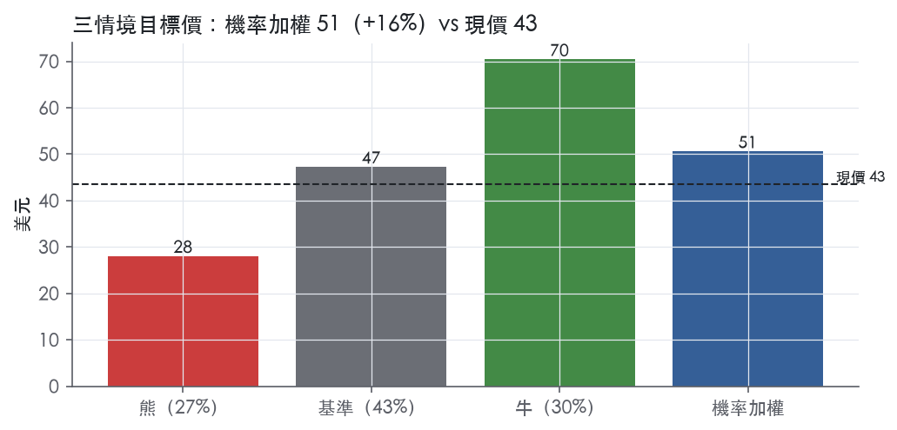
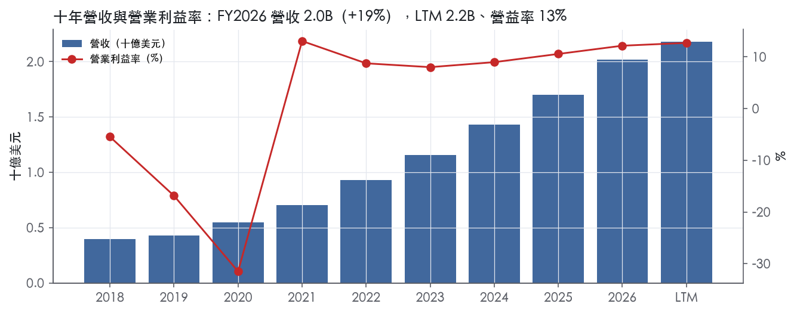
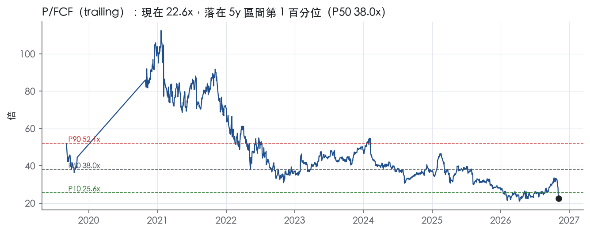
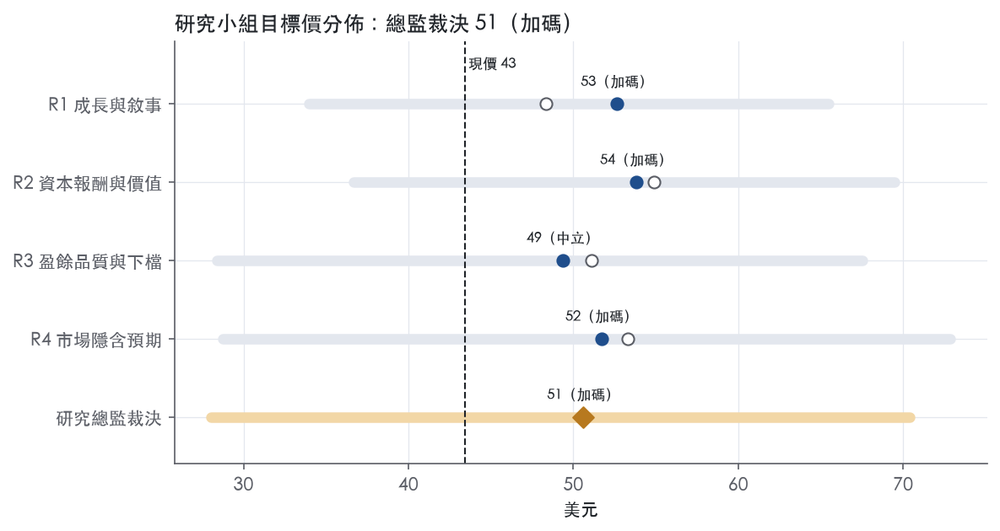

評等總表 › 資訊科技 › DT
每股FCF遭稀釋，持平倍數下中性｜評等 加碼｜目標價 51
| 報告日 | 評等 | 目標價 | 當時股價 | 超額報酬 |
|---|---|---|---|---|
| 2026-11-06 | 加碼 | 50.60 | 43.44 | +6.6% |
| 2026-10-30 | 加碼 | 70.76 | 57.69 | +12.7% |
| 快評 | 動作 | 結論 |
|---|---|---|
| 2026-11-03 | 維持 | 營益超出預測，維持加碼 |
| 評等 | 加碼（邊界，鄰近中立） |
| 12 個月目標價 | 51 美元 |
| 現價 | 43.44 美元（2026-11-06） |
| 預期報酬 | 股價 +16.5%＋股息 0.0%＝總報酬 +16.5%；同業籃門檻 9.8%，超額 +6.6% |
| 估值方法 | P/FCF 20.0x，套在第 5–8 季的自由現金流（也就是一年後的未來四季） |
| 三情境 | 熊 28／基準 47／牛 70 |
| 研究流程 | 四位研究員兩輪辯論＋研究總監裁決 |
| 資料來源 | SEC EDGAR XBRL、Tiingo、FRED（全免費） |
每股FCF遭稀釋，持平倍數下中性（研究總監裁決，四位研究員兩輪辯論後）
評等 加碼（邊界，鄰近中立）｜12 個月目標價 51 美元（總監三情境機率加權 49 與研究員中位數 52 各半）｜現價 43.44（2026-11-06）
預期報酬：股價 +16.5%＋股息 0.0%＝總報酬 +16.5%。同業籃門檻 9.8%，超額 +6.6%，離中立的分界不到三個百分點，屬邊界評等（落在其他級距的機率約四成）。
估值方法：P/FCF 20.0x，套在第 5–8 季的自由現金流（也就是一年後的未來四季）。三情境：熊 28（27%）／基準 47（43%）／牛 70（30%）。
立場中性而評等加碼：評等看的是「預期總報酬 16.5% − 同業籃門檻 9.8%」＝超額 6.6%，不是絕對漲跌；中性但超額偏離門檻，代表情境機率或股利把報酬推離門檻。
評等說明：研究總監自己的機率加權目標價 49 美元對應「中立」；與研究員第二輪中位數 52 美元各半後為 51 美元，落入「加碼」。兩者只差一級，請把這檔讀成「中立～加碼」，正文裡總監的立場文字以「中立」寫成。
什麼會讓研究總監改變看法：10-Q 若顯示 Q2 的 1B 現金是普通股增資，或 FY2027Q3 稀釋股數超過 314M、固定匯率 ARR 跌破 15%，轉看空；投資者日若給出 ARR >= 15% 加 non-GAAP 營益率 >= 35% 的 FY2029 目標且 10-Q 確認為低票息可轉債，基準倍數上移到 23–24x、轉看多。
| 過去四季（實際，FY2027Q2） | 未來四季 | 第 5–8 季 | 第 9–12 季 | |
|---|---|---|---|---|
| 營收（B） | 2.2B | 2.5B | 2.8B | 3.2B |
| 營收成長 | 17.8% | 15.5% | 13.0% | 11.0% |
| 營業利益率 | 12.7% | 11.0% | 13.0% | 14.5% |
| EPS（美元） | 0.54 | 0.74 | 0.98 | 1.20 |
| EPS 成長 | -67.8% | 38.6% | 31.8% | 22.2% |
| 每股股息（美元） | — | 0.00 | 0.00 | 0.00 |
| P/E（現價） | 80.8x | 58.3x | 44.2x | 36.2x |
| 股息殖利率（現價） | — | — | — | — |
過去四季為申報數字；預測為研究總監的假設、程式計算。倍數與殖利率都用現價計算，用來看現價對應各期獲利的高低。
| 項目 | 上次（2026-11-01） | 這次（2026-11-08） | 變動 |
|---|---|---|---|
| 評等 | 加碼 | 加碼 | ＝ |
| 機率加權目標價（美元） | 71 | 51 | -28.5% |
| 超額報酬 | 12.7% | 6.6% | -6.0 pp |
| 目標倍數 | 28x | 20x | — |
| 未來四季營收成長 | 14.5% | 15.5% | +1.0 pp |
| 未來四季營益率 | 13.0% | 11.0% | -2.0 pp |
| 未來四季 EPS（美元） | 0.96 | 0.74 | -22.7% |
| 熊／基準／牛機率 | 26／40／34 | 27／43／30 | — |
程式計算；「未來四季」各自從當次報告的資料起點算。研究總監逐點說明見第八章「與上次報告比較」。
| 情境 | 機率（歷史） | 故事 | 未來四季營收成長 | 第 5–8 季營益率 | 倍數 | 目標價 | 股價漲跌 |
|---|---|---|---|---|---|---|---|
| 熊 | 27%（25%） | 對應風險表第 1 條（大企業採購延後、Q3/Q4 季末成交落空、固定費用去槓桿）、第 3 條（通用 AI 壓價）、第 2 條（Arize 整合不如預期）；可轉債 if-converted 加 CFO 交接期回購放緩使股數 +3%；總經走本行下行路徑 | 11.0% | 8.5% | 16.0x | 28 | -35.4% |
| 基準 | 43%（45%） | Arize 稀釋壓 FY2027 下半年 GAAP 營益率後恢復每年約一個百分點擴張，有機成長 15% 緩降，股數一年一階上升，市場倍數持平 | 15.5% | 13.0% | 20.0x | 47 | 8.8% |
| 牛 | 30%（30%） | 2027-02-16 投資者日 FY2029 目標 ARR ≥15% 加 non-GAAP 營益率擴張可信，10-Q 顯示 1B 現金為低票息可轉債，Q1–Q2 回購步調延續吸收 Arize 股數台階，倍數回到前瞻帶 P10 之下的 26x | 17.5% | 15.0% | 26.0x | 70 | 62.1% |
目標價由程式依研究總監的驅動與倍數計算；機率由研究總監給定。括號內是歷史頻率：把這檔股票過去十年 12 個月報酬的波動形狀，置中在基準情境，結果落在各情境附近的比例。

四位研究員用不同方法各自估值，回應研究總監的質疑後交出第二輪，最後由總監逐點裁決。各研究員的主張見第七章，裁決理由見第八章，完整論證見《研究底稿》。
| 立場（一輪→二輪） | 加權目標價（一輪→二輪） | 評等（一輪→二輪） | 第二輪倍數 | 熊～牛目標價 | |
|---|---|---|---|---|---|
| R1 成長與敘事 | 看多→看多 | 48→53 | 中立→加碼 | 25.0x | 34～65 |
| R2 資本報酬與價值 | 看多→看多 | 55→54 | 買進→加碼 | 27.0x | 37～69 |
| R3 盈餘品質與下檔 | 中性→看多 | 51→49 | 加碼→中立 | 21.0x | 28～68 |
| R4 市場隱含預期 | 看多→看多 | 53→52 | 加碼→加碼 | 20.0x | 29～73 |
| 研究總監裁決 | 中性 | 51 | 加碼 | 20.0x | 28～70 |
目標價由程式依各自的驅動與倍數計算；評等＝機率加權總報酬 − 同業籃門檻。
Dynatrace 是一家以統一可觀測性（observability）、持續執行時應用安全，以及代理式 AI 維運為核心的軟體平台公司，賣給全球大型企業的 IT 維運、開發、安全、業務與高管團隊¹。公司願景是「讓軟體完美運作」，平台設計為可無縫嵌入混合、多雲環境，包括 AWS、Azure、GCP 等主要雲端供應商及傳統地端與主機系統¹。截至 2026 年 3 月 31 日，公司在 110 多個國家擁有約 4,100 個客戶，涵蓋銀行金融、政府、保險、零售批發、交通運輸與軟體業¹。本質上這是一家賣「企業 IT 系統體檢與自動修復」訂閱服務的公司，客戶是花得起錢、系統複雜到自己管不動的大型企業。
公司不按傳統事業部分拆揭露財務，而是以單一整合平台呈現，10-K 未揭露各產品線營收佔比。平台核心是資料湖倉 Grail（統一儲存 logs、traces、metrics 等遙測數據，無需預先建索引）、因果關聯引擎 Smartscape，以及今年推出的代理式維運系統 Dynatrace Intelligence，結合確定性 AI 與代理式 AI¹。平台涵蓋 AI Observability、Log Management、現代雲端可觀測性、基礎設施可觀測性、應用程式可觀測性、數位體驗、應用安全、軟體交付、開發者體驗與商業分析等解決方案，並搭配 Bindplane、OpenPipeline、OneAgent、PurePath 等底層技術元件¹。計費模式為 DPS（Dynatrace Platform Subscription），客戶承諾最低年度消費額，超用不罰款、按實際用量計費，鼓勵擴大消費¹。從最新財報看，Log Management 年增率超過 100%，基礎設施管理年化消費額已突破 500M 美元、年增約 30%，是目前成長最快的兩個產品線²。公司訂閱營收佔總營收比重高：FY2027Q2 訂閱營收 553M 美元，占總營收 580M 美元的絕大部分²。
公司靠「全球直銷＋夥伴網絡」雙軌出海，直銷團隊鎖定全球最大 15,000 家企業，夥伴則包括 GSI（Accenture、Deloitte、DXC、Kyndryl 等）、雲端供應商、經銷商與技術聯盟夥伴（Red Hat、ServiceNow、VMware 等）¹。FY2026 與 FY2025 均有一家通路夥伴占營收 10%，但沒有任何終端客戶占營收超過 10%，客戶集中度風險不高¹。公司員工約 5,600 人，30% 在美國、28% 在奧地利，顯示歐洲（尤其奧地利，公司發源地）仍是重要運營基地¹。FY2027Q2 新聞稿顯示超過 1,100 個客戶已使用 Dynatrace agents 執行自主維運，相較上季的 800 多個明顯增加，且 AI 客戶群組的消費速度是其他客戶的兩倍以上，代表 AI 相關應用正在快速滲透既有客戶基礎而非單靠新客戶數量²。
FY2026Q3（2025-12-31）營收 0.52B 美元、年增 18.2%，營益率 14.1%（is/）。FY2026Q4（2026-03-31，倒推）營收 0.53B 美元、年增 19.4%，但營益率季節性回落至 7.0%。FY2027Q1（2026-06-30）總營收 555M 美元、年增 16%，ARR 達 2,136M 美元、年增 17%，公司稱創下新客戶 ARR 成長紀錄逾 160%，GAAP 營益率 13%、Non-GAAP 營益率 29%，單季回購 275M 美元股票³。FY2027Q2（2026-09-30）總營收 580M 美元、年增 17%，ARR 達 2,207M 美元、年增 16%，GAAP 營益率 16%、Non-GAAP 營益率 32%，單季回購 246M 美元股票，並完成 Arize 收購，另宣布新增 10 億美元回購額度，累計可用回購額度約 1.3B 美元²。公司對 FY2027 全年指引上修：ARR 指引區間 2,393M–2,413M 美元（較前次指引上調 34M），總營收指引 2,330M–2,340M 美元，但 Non-GAAP 營益率指引下修至 28%–28.25%（因 Arize 併購稀釋約 175 個基點）²。Q3 FY2027 指引為總營收 591M–596M 美元、年增 15%–16%，Non-GAAP 營益率 26%²。整體看，營收與 ARR 成長持續加速、但單季 GAAP 營益率因收購稀釋與股數增加呈現波動，公司選擇用自由現金流換成長與股東回報的組合策略相當明確。
公司列出四大成長策略：（一）延伸技術與市場領先地位，持續投入研發與代理式 AI 能力，並看好下一代日誌管理產品的成長機會¹；（二）擴大並深化既有客戶關係，透過 DPS 計費模式帶動更廣泛的平台消費與跨部門擴張¹；（三）擴大客戶基礎，持續投資go-to-market策略、夥伴賦能，並將銷售動能從單一應用效能監控擴展到端到端可觀測性與雲端現代化，同時拓展國際市場¹；（四）槸桿戰略夥伴生態系，深化與 GSI 及主要雲端供應商的 AI、雲端導向合作關係¹。管理層在 FY2027Q2 法說中明確表示，透過整合 Arize 強化 AI 生命週期的可觀測性與治理能力，是因應企業將 AI 代理推上生產環境後、對可靠性與治理需求上升的策略回應²；公司並訂下 2029 財年達成「Rule of 50」（ARR 定率成長率＋Non-GAAP 營益率合計達 50）的中長期目標，將於 2027 年 2 月投資者日公布多年財務目標²。公司的敘事核心是把觀測力產品重新定位成「AI 時代基礎設施的守門員」，用既有企業客戶的高黏著度去交叉銷售 Log Management 與基礎設施管理這兩個目前成長最快的模組。Arize 併購短期內會壓縮獲利率，但公司似乎認為補齊 AI 應用層可觀測性的產品缺口，比短期維持利潤率更重要。股票回購力度持續加碼（累計可用額度已達 1.3B 美元）顯示管理層對現金流可見度與資本配置紀律有相當信心。

Dynatrace 的護城河評為「窄」。大型企業部署後的轉換成本確實存在，但 ROIC 只有最近三年高於資本成本，競爭範圍也在擴大，所以我們有把握未來 5 年以上 ROIC 仍高於資本成本，對 10 年則沒有把握。趨勢判為穩定：平台擴張與 DPS 消費模式在加深客戶黏著度，開放遙測標準與通用 AI 方案則在削弱它，兩股力量目前大致抵銷。
護城河主體是轉換成本，無形資產只算輔助。
數字只看得到一半：毛利率支持「黏著且有定價力」的判斷，ROIC 只撐得起「窄」，撐不起「寬」。
最大威脅是開放標準削弱資料採集層的鎖定，其次是競爭者範圍擴大與通用 AI。
目標倍數相對軟體同業建議持平，不給溢價。轉換成本足以支撐 5 年以上的超額報酬，但 ROIC 對資本成本的緩衝很薄，開放標準與通用 AI 也在侵蝕採集層的鎖定，條件不足以支撐只有寬護城河才配得上的長期溢價。EV/EBITDA 現在落在自身 5 年分位 2.8%，歷史倍數的重評價已經發生，因此不宜拿自身 5 年中位數 75.0x當回歸錨點；應以同業水準定錨，超額報酬期假設 5 年而非 10 年。
| 指標 | 最新 | 十年平均 | 標準差 | 最低 | 最高 |
|---|---|---|---|---|---|
| ROIC | 10.8% | 5.4% | 10.2% | -18.7% | 13.4% |
| 毛利率 | 81.6% | 79.5% | 2.7% | 75.2% | 81.8% |
| 營業利益率 | 12.2% | 0.9% | 14.7% | -31.5% | 13.1% |
| FCF 利潤率 | 26.2% | 21.0% | 18.1% | -29.7% | 32.4% |
| ROE | 6.2% | -6.7% | 52.7% | -143.8% | 35.3% |
程式計算。資本成本代理值（10 年債＋5%）：9.8%；ROIC 平均減資本成本：-4.4%；ROIC 有資料的 7 年中，高於資本成本 3 年。
Dynatrace的現金流對淨利覆蓋倍數在LTM、近三年、十年均顯著大於1，應計比率持續為負，顯示盈餘不是靠應計堆出來的。但SBC／營收十年平均15.5%、近三年15.1%、LTM 13.9%，遠高於紅燈門檻8%，且本系統不加回SBC計算現金流，這是真實的經濟稀釋成本。稀釋股數年變動LTM +2.7%，近三年+1.4%，顯示回購尚未能完全抵銷SBC發股的稀釋效果（黃燈）。整體歸類為中品質：現金面無問題，但盈餘的「真實每股價值」被SBC與稀釋持續侵蝕。
現金完全跟上、甚至遠超GAAP淨利。LTM營業現金流／淨利3.75x、自由現金流／淨利3.57x，近三年平均分別為2.28x與2.14x，十年平均3.31x與3.06x，全部落在綠燈區。應計比率LTM為-9.5%、近三年-5.3%、十年-7.8%，持續為負值代表CFO長期高於淨利，盈餘沒有被應收帳款、存貨等應計項目灌水。應收帳款成長與營收成長的落差（FY2026）為-5.1pp，屬綠燈，營運資金沒有在吃盈餘。這組指標是Dynatrace盈餘品質裡最乾淨的一塊，主要原因是訂閱制收入先收款、後認列的商業模式本質。
FY2027Q2單季GAAP營業利益96M美元，非GAAP營業利益184M美元，差距88M美元，GAAP營業利益率16%對比非GAAP營業利益率32%，整整相差16個百分點²。GAAP淨利67.764M美元、每股0.23美元；非GAAP淨利161.575M美元、每股0.54美元，差距近乎一倍²。新聞稿本身未在本節逐項列出SBC、攤銷、重組的分項金額，但從GAAP與非GAAP營業利益的落差規模（88M美元，約為GAAP營業利益的92%）可推斷SBC是主要調整項，這與計分表SBC／營收LTM 13.9%的規模相符。公司另揭露「Adjusted Free Cash Flow」42.290M美元，季度FCF利潤率7%，這是公司自訂的非GAAP現金流指標，與GAAP營業現金流41.085M美元接近，差異不大，代表這項調整對現金面影響有限，真正的落差集中在損益表的SBC項目。稀釋股數方面，GAAP與非GAAP用同一組稀釋股數301,671千股²，但公司guidance中FY2027全年稀釋股數上修至306-308M（前次guidance為295-297M），增加約11M股，主因是股價上漲使可轉債/選擇權的稀釋效果提高，這是SBC與資本結構共同作用的結果。我認為SBC是真實成本，不應在估值時全數加回；攤銷性質的調整（若有）則可部分視為非現金、非經濟性支出。
槓桿方面公司處於淨現金狀態，無財務壓力。淨負債／EBITDA LTM為-7.00x、近三年-4.60x、十年-4.64x，全部是淨現金（量化底�3），利息保障倍數LTM 231.0x、近三年192.6x、十年66.4x，付息能力完全沒有疑慮。資本配置上，股利加回購／淨利近三年與十年平均都是165.0%，綠燈但超過100%，意味著公司回饋股東的金額超過當期GAAP淨利。這並非舉債回饋——淨負債持續為負值且現金餘額在FY2027Q2達2.08B美元，是用帳上現金與營運現金流支應。本季公司實際花費246M美元回購5.2M股，均價47.38美元每股，同時董事會新增10億美元回購額度，使累計剩餘回購額度達約1.3B美元²。CEO與CFO在新聞稿中明確將回購擴大與「robust cash generation」及「strength of our balance sheet」掛鉤²，顯示管理層本身也以現金流而非GAAP淨利作為資本配置的依據，這與本節現金面結論一致。
SBC／營收紅燈（LTM 13.9%，近三年平均15.1%）：這是真問題，不是一次性或口徑假警報。十年平均15.5%顯示這是Dynatrace長期的薪酬結構常態，而非單一年度的股票獎勵高峰。公司的非GAAP營業利益率（32%）與GAAP營業利益率（16%）之間16個百分點的落差²主要反映SBC被排除在非GAAP數字外，但本系統評分與估值上不加回SBC，因為SBC會持續稀釋股東權益，屬於真實經濟成本。
淨利率FY2018→FY2019跳動-29pp：十年表中FY2019 SBC／營收達16.5%（較FY2018的5.6%大幅跳升），加上FY2019仍為成長早期、營業利益率-16.9%，推斷主因是上市前後股權獎勵費用認列增加，屬於會計口徑（SBC費用化時點）而非現金流問題，可解釋。
淨利率FY2019→FY2020跳動-49pp：FY2020 SBC／營收達40.8%（十年表最高點），營業利益率-31.5%，FCF仍為正但淨利為-0.41B美元。這高度集中於IPO相關股權獎勵一次性費用認列，屬於一次性/會計口徑問題，現金流當期未同步惡化到同等程度（CFO仍為-0.14B但遠優於淨利降幅），可解釋為非常態。
淨利率FY2020→FY2021跳動+87pp：FY2021 SBC／營收回落至8.2%，營業利益率轉正至13.1%，淨利轉正0.08B美元，這是對FY2020一次性IPO費用高基期的回歸正常，不是新的盈餘品質問題，可解釋。
淨利率FY2024→FY2025跳動+18pp：FY2025淨利0.48B美元、EPS 1.59美元，較FY2024淨利0.15B美元跳升明顯，但EBITDA僅由0.18B升至0.23B，顯示淨利跳升不全是營運改善，可能含稅項或一次性利得（如所得稅遞延資產認列、投資利得等）。資料包未提供FY2025當年10-K附註細節佐證具體項目，此處只能標示為「需進一步查FY2025 10-K所得稅附註」，暫列為可能的一次性項目但未完全解釋。
淨利率FY2025→FY2026跳動-20pp：FY2026淨利0.16B美元較FY2025的0.48B美元大幅回落，而EBITDA由0.23B升至0.27B、CFO由0.46B升至0.56B，顯示營運面持續改善，淨利下滑與營運現金流方向相反。這與上一條對稱，同樣指向FY2025淨利存在非常態的墊高項目，FY2026的回落其實是回歸正常基期，而非FY2026出問題，可解釋。
估值應以GAAP數字為主、對非GAAP數字打折，因為SBC是持續且規模達營收13-15%的真實成本，不能像公司非GAAP口徑一樣全數排除。淨現金部位（淨負債/EBITDA -7.00x）完全不構成槓桿限制，不應對估值倍數做槓桿折價，EV/EBITDA 33.8x、P/E 80.8x的高倍數要靠成長與現金轉換支撐，而非資產負債表風險。FY2024-FY2026淨利率的大幅跳動建議在估值模型中用EBITDA或FCF（現金轉換穩定、十年均值在3x以上）作為盈餘品質的錨，而非單看GAAP EPS的年度波動。
| 項目 | LTM | 近三年 | 十年 | 燈號 | 規則 |
|---|---|---|---|---|---|
| 營業現金流／淨利 | 3.75x | 2.28x | 3.31x | 綠 | ≥1.00x 綠、<0.80x 紅 |
| 自由現金流／淨利 | 3.57x | 2.14x | 3.06x | 綠 | ≥0.90x 綠、<0.60x 紅 |
| 應計比率（(淨利−CFO)／平均總資產） | -9.5% | -5.3% | -7.8% | 綠 | ≤0.0% 綠、>5.0% 紅 |
| SBC／營收 | 13.9% | 15.1% | 15.5% | 紅 | ≤3.0% 綠、>8.0% 紅 |
| 淨負債／EBITDA | -7.00x | -4.60x | -4.64x | 綠 | ≤1.50x 綠、>3.00x 紅 |
| 利息保障倍數（營業利益／利息） | 231.0x | 192.6x | 66.4x | 綠 | ≥8.00x 綠、<3.00x 紅 |
| 稀釋股數年變動 | 2.7% | 1.4% | 2.3% | 黃 | ≤0.0% 綠、>3.0% 紅 |
| （股利＋回購）／淨利 | — | 165.0% | 165.0% | 綠 | ≥50.0% 綠、<0.0% 紅 |
| 應收帳款成長 − 營收成長（FY2026） | -5.1pp | — | — | 綠 | ≤5pp 綠、>15pp 紅 |
程式計算；燈號以 LTM（無則近三年平均）判定。
| 風險 | 觸發指標（看什麼數字、在哪裡看） | 對 EPS 的影響方向與粗略幅度 | 未來 12 個月發生機率（高／中／低） | 出處 |
|---|---|---|---|---|
| 大型企業銷售週期拉長、季度營運結果波動大，營收不如預期 | 每季 ARR 年增率（10-Q／8-K）、季末兩週成交集中度、Non-GAAP 營益率指引是否下修 | 方向：負；FY2027 指引已顯示 Non-GAAP 營益率因素敏感，若營收不達標，固定成本結構下短期難以緩解營益率衝擊⁴ | 中 | 10-K 年報 FY2026 Item 1A（風險因素） |
| Arize 併購稀釋利潤率，整合不如預期 | Non-GAAP 營益率實際值 vs 指引 28%–28.25%（8-K 2026-11-03）、商譽減損公告 | 方向：負；公司自估 Arize 併購拖累 Non-GAAP 營益率約 175 個基點² | 高 | 8-K 財報新聞稿（2026-11-03） |
| AI 原生競爭對手（含通用 LLM／generic agents）侵蝕平台差異化，客戶轉用低成本自建或泛用 AI 方案 | 訂閱營收年增率趨勢、Log Management／Infrastructure Management 消費成長率是否降速（目前 >100%／~30%，8-K 2026-11-03） | 方向：負；方向明確但資料包與原文均未給百分比衝擊，僅可判斷為中大 | 中 | 10-K 年報 FY2026 Item 1A（風險因素） |
| 競爭格局整合（Cisco/Splunk、Palo Alto/Chronosphere 等併購）壓縮定價與市占 | 大客戶續約價格與條款變化、公司是否在法說提及定價壓力、毛利率是否偏離 FY2026 的 81.6% | 方向：負；原文僅列競爭因子，無數字⁴ | 中 | 10-K 年報 FY2026 Item 1A（風險因素） |
| 公開市場倍數壓縮（利率維持高位、股價已在高倍數分位回落）放大任何基本面波動對股價的衝擊 | 10 年期美債利率（現 4.84%）、EV/Sales 相對五年分位是否進一步下滑 | 方向：負（倍數層面而非 EPS 層面）；屬估值敏感度而非盈餘風險 | 中 | 研究判斷 |
1. 銷售週期與季度波動：公司自己承認「許多客戶是大型企業，其採購決策、預算週期與評估流程不可預測且不受公司控制」，在經濟不確定時銷售週期會拉長、採購可能延後或取消⁴。公司也揭露交易集中在每季最後兩週，且第三、四財季通常是最大季⁴。這代表單一季度的營收與營益率可以因為少數大型交易延後而大幅偏離預期，而「一部分營業費用在短期內是固定的，一旦營收不如預期，公司在短期內無法緩解對利潤率的衝擊」⁴。監測方法：每季 ARR 年增率與實際達成率對比公司自身指引區間（目前 FY2027 ARR 指引 2,393M–2,413M 美元）²。
2. Arize 併購稀釋利潤率：公司在 2026 年 10 月 1 日完成 Arize 收購，FY2027 指引明確寫出此併購貢獻約 200 個基點的 ARR 成長加速，但同時造成 Non-GAAP 營益率約 175 個基點的稀釋²。這是五條風險中唯一有明確、公司自己給出的量化數字，且已經體現在最新指引下修（Non-GAAP 營益率指引從 29.5%–29.75% 下修至 28%–28.25%）²。10-K 也列出收購整合的通用風險，包括「未能達成預期協同效益」「商譽減損」「稀釋股東權益」等⁴，公司過去兩年已收購 Metis、DevCycle、Bindplane，顯示併購頻率不低，整合風險是常態而非一次性事件⁴。監測方法：每季法說會對 Arize 整合進度的更新，以及實際 Non-GAAP 營益率是否落在指引區間內。
3. AI 原生競爭侵蝕差異化：公司直接承認「競爭對手或第三方可能比我們更快或更成功地將 AI 整合進產品…這可能降低對我們平台的需求並對營運結果產生不利影響」，並明確點名「可能面臨來自依賴通用 LLM、生成式 AI 與通用型 agent 的非專業解決方案的更大競爭」⁴。這條風險特別值得注意的原因是：公司最新財報的成長引擎（Log Management 年增逾 100%、Infrastructure Management 年增約 30%）正是建立在「客戶認為專業可觀測性平台優於自建或通用 LLM 方案」這個前提上²。如果這個前提鬆動，目前最快成長的兩條產品線會首先受影響。監測方法：每季法說會對 Log Management／Infrastructure Management 消費成長率的更新，以及是否出現續約時客戶要求降價或減少承諾消費額的揭露。
4. 競爭格局整合壓縮定價：10-K 明確點名「Cisco 於 2024 年收購 Splunk，Palo Alto Networks 於 2026 年收購 Chronosphere」，並指出「若競爭對手建立或強化與軟體 APM、資料分析、合規或網路可視性供應商的合作關係，可能不利於我們的競爭能力」⁴。公司也承認「大型全球客戶…可能要求實質性的價格讓步」⁴。這條風險的傳導路徑是毛利率與續約折扣率，目前毛利率 FY2026 為 81.6%，屬於觀察基準【判，數字引自資料包 】。監測方法：毛利率季度變化、是否有大型客戶續約條件惡化的揭露。
5. 估值倍數壓縮：這條不在 10-K 風險因子裡，是我們自己的判斷。目前 EV/Sales 5.0x 處於五年分位 1.8%、EV/EBITDA 36.0x 處於 2.8% 分位（資料包 band.*），遠低於全期起點的 11.0x／78.4x，顯示市場已經大幅重新定價這類高成長軟體股的倍數【判，資料包 band.ev_sales／band.ev_ebitda】。在美國 10 年期公債利率維持 4.84%的環境下，任何基本面不如預期的消息都可能被倍數收縮放大，而非單純反映在 EPS 上。
回購與併購同時加碼，資本配置優先順序值得關注：公司在單季內花費 246M 美元回購股票、同時完成 Arize 收購並新增 10 億美元回購額度（累計可用額度約 1.3B 美元），GAAP 稀釋股數卻從 304.3M 增加至指引區間 306–308M²。回購速度與股數不減反增同時發生，代表 SBC（股權薪酬）發行速度可能快於回購抵銷速度，這會稀釋每股盈餘成長，但原文完全沒有討論這個張力，10-K 也只泛泛提及股票回購可能被暫停或終止⁴。
FedRAMP 與聯邦政府業務擴張帶來的新合規成本與收入波動性：公司在本季公告取得 FedRAMP Class D (High) 「Initial Implementation」狀態，正朝美國聯邦最高雲端安全基準邁進²。10-K 風險因子也提到政府銷售受預算週期、政府關門與審計要求等因素影響⁴，但沒有把兩者連起來看：隨著公司深化聯邦政府業務，未來營收對美國政府預算週期與政治不確定性的敏感度會上升，這是一個尚未反映在公司既有風險敘事裡、但隨業務結構變化而日益重要的新變數。
現價 43.44 對應 trailing（過去四季）P/E 80.8x、EV/EBITDA 33.8x、EV/EBITA 36.0x、EV/Sales 4.7x、FCF 殖利率 4.7%。主要估值倍數 P/FCF 現在 22.6x，落在5 年區間第 1 百分位（P10／P50／P90 = 25.6x／38.0x／52.1x）。

把程式的機械基準預測放到現價下，市場付的前瞻倍數是：P/FCF（未來四季） 19.7x、P/E（未來四季） 46.1x、P/FCF（第 5–8 季） 17.8x、P/E（第 5–8 季） 41.6x。反推 DCF 顯示市價隱含未來五年營收年成長 18.8%（WACC 9.0%、終值成長 3.0%、FCF 利潤率 11.4%，SBC 不加回）。
| 倍數 | 現在 | 5 年 P10 | 5 年 P50 | 5 年 P90 | 現在分位 | 全期 P50 |
|---|---|---|---|---|---|---|
| P/E | 80.8x | 30.1x | 96.5x | 355.4x | 34.2% | 104.6x |
| EV/EBITDA | 36.0x | 45.1x | 75.0x | 94.9x | 2.8% | 78.4x |
| EV/EBITA | 38.4x | 48.5x | 81.6x | 103.0x | 2.2% | 85.5x |
| EV/EBIT | 39.6x | 49.9x | 108.6x | 152.8x | 2.5% | 120.8x |
| EV/Sales | 5.0x | 6.1x | 9.9x | 13.2x | 1.8% | 11.0x |
| P/S | 6.0x | 6.7x | 10.4x | 13.6x | 4.7% | 11.3x |
| P/FCF | 22.6x | 25.6x | 38.0x | 52.1x | 1.1% | 40.4x |
trailing 倍數（股價 ÷ 過去四季）；分位以每個交易日計算。
同業籃：DDOG, NOW, ESTC, NTNX, MDB（手動名單（playbooks/peers.yaml））。評等門檻 9.8%：同業「倍數不變下持有一年」的隱含報酬中位數（＝ FCF 殖利率 ×(1＋g)＋g，g 為 5 年營收年複合成長並夾在 −2%～8%），每家夾在 0～15%、P/E 低於 5 倍視為資料可疑而排除，中位數再限制在 10 年債到 10 年債＋5% 之間（同業原始中位數 11.5%）；排除：NTNX（P/E 0.0x 資料可疑）。
| 代號 | 市值 | 5 年營收 CAGR | 營益率 | ROIC | P/E | 5 年 P/E 中位數 | EV/EBITDA | P/FCF | 隱含報酬 |
|---|---|---|---|---|---|---|---|---|---|
| DT | 12.4B | 23.5% | 12.7% | 10.8% | 80.8x | 96.5x | 33.8x | 21.5x | 13.0% |
| DDOG | 67.1B | 41.5% | 2.3% | 3.4% | 249.3x | — | 377.6x | 54.7x | 10.0% |
| NOW | 105.8B | 24.1% | 9.7% | — | 73.2x | 131.8x | 39.4x | 22.3x | 12.8% |
| ESTC | 9.0B | 23.4% | -2.6% | -7.5% | 24.6x | — | — | 25.9x | 12.2% |
| NTNX | 0.0B | 15.4% | 9.6% | -12.6% | 0.0x | — | -6.8x | 0.0x | 5331.6% |
| MDB | 25.7B | 33.1% | -0.5% | — | — | — | — | 38.9x | 10.8% |
| 同業中位數 | 24.1% | 2.3% | -7.5% | 48.9x | 131.8x | 39.4x | 25.9x | 9.8% |
全部 trailing，程式以各公司 SEC XBRL 與 Tiingo 行情計算；第一列為本檔。
P/E 相對同業中位數：現在 65.3%，過去 1 年平均 25.9%、3 年 -14.4%、5 年 —；EV/EBITDA 相對同業中位數：現在 -9.0%，過去 1 年平均 2.0%、3 年 —、5 年 —。
事後實現前瞻倍數帶（P/FCF，2019-09-06..2025-11-19）：P10／P50／P90 = 28.4x／35.4x／59.9x。它是每個交易日的股價除以之後四季實際實現的指標；一年後，今天的第 5–8 季正是那時的未來四季，所以這條帶是 12 個月目標價的同口徑倍數。因為用的是事後實際而非當時預期，過去成長超乎預期的公司這條帶會偏低。
程式的機械基準（成長率從過去四季年增率三年收斂到 6%、利潤率持平）用 事後實現前瞻 P/FCF P50 估值得到 87（99.6%），市場現行前瞻倍數（現價 ÷ 基準 未來四季指標）一年後持平，套在基準 第 5–8 季指標得到 49。這兩個數字只是參考點，不是本報告的目標價；研究員對這個定價的回應在第七章。
下表是每位研究員第一輪（各自獨立）與第二輪（回應研究總監的質疑後）的結果。目標價全由程式依各自的假設計算。
| 立場（一輪→二輪） | 加權目標價（一輪→二輪） | 評等（一輪→二輪） | 第二輪倍數 | 熊～牛目標價 | |
|---|---|---|---|---|---|
| R1 成長與敘事 | 看多→看多 | 48→53 | 中立→加碼 | 25.0x | 34～65 |
| R2 資本報酬與價值 | 看多→看多 | 55→54 | 買進→加碼 | 27.0x | 37～69 |
| R3 盈餘品質與下檔 | 中性→看多 | 51→49 | 加碼→中立 | 21.0x | 28～68 |
| R4 市場隱含預期 | 看多→看多 | 53→52 | 加碼→加碼 | 20.0x | 29～73 |
| 研究總監裁決 | 中性 | 51 | 加碼 | 20.0x | 28～70 |
目標價由程式依各自的驅動與倍數計算；評等＝機率加權總報酬 − 同業籃門檻。
分歧度：第一輪 加權目標價 48～55（區間＝現價的 15%）· 倍數 21～25x · 立場 看多×3、中性×1；第二輪 加權目標價 49～54（區間＝現價的 10%）· 倍數 20～27x · 立場 看多×4（方向一致）。

| 研究員 | 第二輪主張 | 堅持的理由 |
|---|---|---|
| R1 成長與敘事 | 看多，給未來一年自由現金流 25 倍，錨在同業中位數 25.9 倍。 | 平台消費年增逾 20%，他維持第二年營收成長 13.5%。 |
| R2 資本報酬與價值 | 看多，給未來一年自由現金流 27 倍，錨在自家三年區間下半部。 | 類股降評會部分回復，倍數應高於過去一年中位數 25.6 倍。 |
| R3 盈餘品質與下檔 | 改看多，給第二年自由現金流 21 倍；總監仍以他原本的中性看待。 | 股數年增 3.0%，Arize 與可轉債的稀釋不會很快消失。 |
| R4 市場隱含預期 | 看多，給第二年自由現金流 20 倍，錨在市場持平點 19.9 倍。 | 市場錯在利潤率：現價假設利潤率持平，他認為會擴張。 |
每位研究員的逐條回應與完整論證見《研究底稿》（DT_研究底稿_2026-11-08.docx）。
| 分歧點 | R1 | R2 | R3 | R4 | 什麼資料會分出勝負 |
|---|---|---|---|---|---|
| 目標倍數與錨 | 25x@ntm，同業中位數 25.9x 扣 SBC 折讓，高於持平 10% | 27x@ntm，自家 3 年帶下半部，假設類股降評部分回復，高於持平 19% | 21x@q5_q8，低於前瞻帶 P10，個股折價維持 | 20x@q5_q8，錨在市場持平 19.9x | 2027-02-16 投資者日 FY2029 目標與資本配置框架；FY2027Q2 10-Q 融資條款 |
| 股數年變動 | −1.5%，回購吸收台階 | +1.0% | +3.0%，台階永久、可轉債 | +1.4%，近三年實測 | 10-Q 揭露 1B 現金來源；FY2027Q3 稀釋股數對 313–314M |
| 營益率 y1/y2/y3 | 12/14/15.5 | 13/14/15 | 10.5/12.5/14 | 12/14/15.5 | FY2027Q3 GAAP 營益率；FY2028 指引（2027-05） |
| 稅率 | 10%（基準） | 28% | 15% | 18% | FY2027 10-K 有效稅率與現金稅；FY2027 FCF 對 600–605M |
| Q5–Q8 營收成長 | 13.5% | 12% | 13% | 13% | FY2028 指引中點（2027-05）；Q3 固定匯率 ARR |
1. 倍數：R4，20x fcf@q5_q8。 本行前提對科技股寫明「倍數以現值為準、不靠倍數擴張」，基準倍數的起點就是市場持平點 19.9x，高於它要有個股理由。R1 的理由是成長配對同業 ESTC 25.9x，但同樣成長配對的 NOW 只有 22.3x，DT trailing 21.5x（同業表）和 NOW 近乎持平；護城河章要求「同業水準、不給溢價」，不是追上同業裡最貴的一家。R2 的 27x 假設類股降評會部分回復，這就是倍數擴張，與前提衝突；它又和他同時下修的股數、稅率一起出現，淨效果是保住第一輪結論，不接受。R3 的 21x 缺定位點。關鍵是壓倍數的個股因素全在 NTM 窗口內：Arize 稀釋 175bp、稀釋股數指引上調 11M²、現金由 1.06B跳到 2.08B而同季 FCF 只有 0.04B、來源未明、CFO 須於 2027-03-31 前離任³；EV/EBITDA 相對同業由一年平均溢價 2.0% 轉為折價 9.0%（同業表）。這些解掉之前市場沒理由付更多，解掉了就是牛情境。
2. 股數：R4，+1.4%。 硬證據是公司指引：FY2027 稀釋加權股數 306–308M（前次 295–297M）、Q3 313–314M，Q2 實際 301,671 千股，且指引不含 9 月 30 日後的回購²。台階確定，回購抵銷是執行問題。R1 的 −1.5% 需要 Q1–Q2 回購（275M、246M）延續整年且 1B 新現金不會轉股，這是牛情境前提。R3 的 +3% 把台階當永久，忽略 1.3B 額度與股價回落後同樣金額買得更多。R4 的 +1.4% 是品質章近三年實測：回購一直在做，股數也一直沒降，這個淨結果比任何推演可靠；R2 的 +1% 理由相近，取實測值。
3. 營益率：own，11.0%／13.0%／14.5%。 y1 的決定性證據是指引：Q3 non-GAAP 營益率 26%（Q2 實際 32%）、全年 28–28.25%（前次 29.5–29.75%），Arize 稀釋全落在下半年²，去年 Q4 單季 GAAP 營益率只有 7.0%。R3 的 10.5% 最貼近，R1／R2／R4 的 12–13% 只比 LTM 12.7% 低一點，幾乎沒給稀釋空間。不全取 R3，因為他的營業利益預測有 −2.9% 系統性偏低、R4 有 +1.3% 偏高（預測紀錄），中性起點在兩人之間；SBC／營收 16.0%→14.8%（FY2026）續降也在縮小 GAAP 缺口。y2／y3 取 13%／14.5%：GAAP 營益率 8.0%→12.2%（FY2026）是四年約一個百分點的斜率，Arize 過週年後恢復它是中性假設；R1／R4 的 14%／15.5% 要 Rule of 50 在投資者日被證實，屬牛情境。
4. 稅率：R4，18%。 Q2 GAAP 營業利益 95,630 千、淨利 67,764 千，中間還有十億級現金的利息收入²，帳面有效稅率遠高於 10%；R3 指出近三年中位數被 FY2025 一次性墊高的淨利污染，正確。但模型 FCF 由淨利推導，帳面稅率會把現金稅算重，公司調整後 FCF 指引 600–605M、26% 利潤率²才是現金對照。R2 自己說稅率設太高會把模型 FCF 壓到指引之下，他的 28% 已是上緣；R3 的 15% 偏向現金稅；R4 的 18% 居中，取它。
5. Q5–Q8 營收成長：R4，13%。 只有 R2 給 12%。FY2027 ARR 固定匯率指引 17.5–18.5% 含 Arize 約 200bp、平台消費年增逾 20%²，有機 ARR 約 15%；Q5–Q8 是 Arize 過週年後的有機期，從 15.5% 減到 13% 已延續 FY2022→FY2026 由 32.1% 到 18.8%（dv.rev_growth）的減速斜率。R2 沒有減速加快的證據；R1 多出的 0.5pp 靠含併購的淨新增 ARR。R4 營收絕對誤差 2.0% 是四人最低（預測紀錄）。
漂移與總經偏離。 退回 R3 的立場漂移：他第二輪加權由 51 降到 49、超額 +3.8%、評等中立，數字沒變好卻把立場從中性改看多，向另外三人靠攏而無新證據；以他第一輪的中性看待。R1 靠攏 87%，但每項都對應我第一輪的意見並附證據，不退回，倍數已在第 1 點實質駁回。R2 的 27x 不是靠攏而是補償性調整，同在第 1 點駁回。四人 macro_deviations 皆空，無須處理；我的假設全照本行前提，沒有人用利率把倍數壓到持平之下。
與機械基準不同的驅動：rev_growth_y1 15.5%（基準 13.8%，FY2027 營收指引 15.5–16%、NTM 含 Arize 下半年²）；rev_growth_y2 13.0%、y3 11.0%（基準 9.9%、6.0%，線性收斂到 6% 太快，見第 5 點）；op_margin 11.0%／13.0%／14.5%（基準 12.7% 持平，見第 3 點）；tax_rate 18%（基準 10%，見第 4 點）；share_change_pct +1.4%（基準 −0.9%，見第 2 點）。D&A、資本支出、SBC 照基準：模型把 SBC 加回 FCF，調高反而美化現金，品質折價由股數與倍數承擔。
目標倍數 20x P/FCF，套在 Q5–Q8 FCF（第 5–8 季），錨是基準模型的市場持平點 19.9x。它低於同口徑的事後實現前瞻帶 P10 28.4x（band.p_fcf），理由是個股：成長由 23.5–32.1% 降到 16–17%、股數在回購下仍升、成長加速靠併購、下半年 GAAP 營益率受稀釋；帶期間利率較低只用來解釋不取 P50。同業比較是 trailing 口徑（對應 ntm），只拿來確認不給溢折價：DT 21.5x 對成長配對的 NOW 22.3x 持平、ESTC 25.9x 折價（同業表）。
機率對歷史：R3 的牛、熊距他的基準 +41%／−41%，歷史落在牛區／熊區 32%／25%；我的基準在他之下、牛因股數 0% 在他之上，牛距更遠故 30%；熊 27% 略高，因為多疊了第 2 條與 CFO 離任（2027-03-31 前）兩個有日期的事件。牛仍高於熊，與歷史順序一致，不延續本部 22 份報告熊高於牛的慣性；兩端都在歷史頻率 10 個百分點內。
反推 DCF 顯示現價隱含 5 年營收成長 18.8%、扣 SBC 後 FCF 利潤率 11.4% 持平。我們在成長上比市場保守（15.5%→13%→11%），在利潤率上比市場樂觀（GAAP 營益率回到擴張斜率、SBC／營收續降），兩項在持平倍數下大致互抵，基準目標價只比現價高一截，機率加權總報酬只略過門檻 9.8%。立場中性；評等若落在中立則一致，若超額剛過加碼線，差距也在本部營業利益預測絕對誤差中位數 9.6% 之內，我們仍以中性看待，等 10-Q 與投資者日解掉融資與 Rule of 50 兩個懸念再動。
現價 43.44 → 點估目標價 47 → 機率加權目標價 49 → 目標價 51，差距拆成五段：成長順延 +5 美元（市場現行倍數 19.9x 一年後持平、獲利照機械基準）；倍數差 +0 美元（總監倍數 20.0x vs 市場持平倍數 19.9x，同一機械基準預測）；盈餘差 -2 美元（總監預測的第 5–8 季自由現金流 0.7B vs 機械基準 0.7B，同一倍數）；情境不對稱 +2 美元（機率加權減點估）；研究小組平均 +2 美元（總監機率加權 49 與研究員第二輪中位數 52 各半）。各段相加等於目標價減現價。本階段未接賣方共識，差距以市場隱含預期為對照。
| 驅動 | 機械基準 | 研究總監 | 差異 |
|---|---|---|---|
| 未來四季營收成長 | 13.8% | 15.5% | +1.7 pp |
| 第 5–8 季營收成長 | 9.9% | 13.0% | +3.1 pp |
| 第 9–12 季營收成長 | 6.0% | 11.0% | +5.0 pp |
| 未來四季營益率 | 12.7% | 11.0% | -1.7 pp |
| 第 5–8 季營益率 | 12.7% | 13.0% | +0.3 pp |
| 第 9–12 季營益率 | 12.7% | 14.5% | +1.8 pp |
| D&A／營收 | 1.3% | 1.3% | ＝ |
| 資本支出／營收 | 1.3% | 1.3% | ＝ |
| SBC／營收 | 13.9% | 13.9% | ＝ |
| 稅率 | 10.0% | 18.0% | +8.0 pp |
| 股數年變動 | -0.9% | 1.4% | +2.3 pp |
研究總監只寫偏移，未寫的沿用基準。
| 期 | 營收 | 成長 | 營益率 | 營業利益 | EBITDA | EBITA | 淨利 | EPS | FCF | 期末淨負債 |
|---|---|---|---|---|---|---|---|---|---|---|
| 未來四季 | 2.5B | 15.5% | 11.0% | 0.3B | 0.3B | 0.3B | 0.2B | 0.74 | 0.6B | -2.7B |
| 第 5–8 季 | 2.8B | 13.0% | 13.0% | 0.4B | 0.4B | 0.4B | 0.3B | 0.98 | 0.7B | -3.4B |
| 第 9–12 季 | 3.2B | 11.0% | 14.5% | 0.5B | 0.5B | 0.5B | 0.4B | 1.20 | 0.8B | -4.2B |
程式依上表的驅動計算；季度用最近四季季節性分攤；不含營運資金變動。
估值方法：P/FCF 20.0x，套在第 5–8 季的自由現金流（也就是一年後的未來四季）。研究總監目標倍數的錨：基準模型市場持平點 19.9x（現行前瞻倍數一年後不變）；低於同口徑事後實現前瞻帶 P10 28.4x 的理由是個股（成長降檔、股數回購下仍升、成長靠併購、下半年 GAAP 營益率受稀釋）；trailing 同業 NOW 22.3x／ESTC 25.9x 只用來確認不給溢折價。
計算：自由現金流（第 5–8 季） 0.7B × 20.0x＝權益價值 13.9B，除以第 5–8 季的股數 → 點估目標價 47（8.8%）；隱含 P/E（未來四季）63.5x、P/E（第 5–8 季）48.1x、EV/EBITDA（第 5–8 季）27.6x、FCF 殖利率（第 5–8 季）5.0%。
總監三情境機率加權目標價 49，研究員第二輪中位數 52，兩者各半＝目標價 51；預期報酬 股價 +16.5%＋股息 0.0%＝總報酬 +16.5%；減評等門檻 9.8%（同業籃隱含報酬中位數（DDOG, NOW, ESTC, NTNX, MDB））＝超額報酬 +6.6% → 評等 加碼（超額 >+15% 買進、+5～+15% 加碼、±5% 中立、−5～−15% 減碼、<−15% 賣出）。同一份資料重開研究小組，超額約有正負四個百分點的雜訊（一個標準差，二十檔實測）；以此估計，評等落在其他級距的機率約四成。超額離中立的分界不到三個百分點，應視為邊界評等。
| 情境 | 機率 | 未來四季成長 | 第 5–8 季成長 | 第 5–8 季營益率 | 自由現金流（第 5–8 季） | 倍數 | 目標價 |
|---|---|---|---|---|---|---|---|
| 熊 | 27% | 11.0% | 6.0% | 8.5% | 0.5B | 16.0x | 28 |
| 基準 | 43% | 15.5% | 13.0% | 13.0% | 0.7B | 20.0x | 47 |
| 牛 | 30% | 17.5% | 16.0% | 15.0% | 0.8B | 26.0x | 70 |
| 主張 | 驗證日 | 看哪個數字 | 門檻 |
|---|---|---|---|
| FY2027Q2 10-Q 顯示 Q2 新增約 1B 現金來自可轉債或借款而非普通股增資 | 2026-12-15 | 10-Q 資產負債表債務（含可轉債）變動 | 債務增加 >= 0.9B 美元 |
| FY2027Q3 總營收達指引下緣且固定匯率 ARR 年增不低於 17% | 2027-02-15 | FY2027Q3 total revenue / ARR cc YoY | >= 591M 美元 且 >= 17% |
| FY2027Q3 GAAP 營益率受 Arize 稀釋但不失控 | 2027-02-15 | FY2027Q3 GAAP operating margin | 8%–13% |
| 投資者日 FY2029 目標同時含成長與利潤率擴張 | 2027-02-16 | FY2029 ARR cc growth target / non-GAAP operating margin target | ARR >= 14% 且 non-GAAP 營益率 >= 33% |
| 回購至少擋住股數跳升 | 2027-06-15 | FY2027Q4 稀釋加權平均股數 | <= 314M |
到期由程式結算（第 5 階段帳本）。
內文上標數字對應下列公司申報文件；未標上標的分析與判斷，是研究小組的觀點。報告中的每個數字都經程式逐一核對資料包或原文。
| 期 | 營收 | 成長 | 毛利率 | 營益率 | EBITDA | 淨利 | EPS | CFO | FCF | ROIC | 淨負債 | 稀釋股數 |
|---|---|---|---|---|---|---|---|---|---|---|---|---|
| FY2018 | 0.4B | — | 75.7% | -5.5% | -0.0B | 0.0B | — | 0.1B | 0.1B | — | — | — |
| FY2019 | 0.4B | 8.3% | 75.2% | -16.9% | -0.1B | -0.1B | — | 0.1B | 0.1B | — | 1.0B | — |
| FY2020 | 0.5B | 26.6% | 76.4% | -31.5% | -0.2B | -0.4B | -1.56 | -0.1B | -0.2B | -18.7% | 0.3B | 0.3B |
| FY2021 | 0.7B | 28.9% | 81.8% | 13.1% | 0.1B | 0.1B | 0.26 | 0.2B | 0.2B | 7.3% | 0.1B | 0.3B |
| FY2022 | 0.9B | 32.1% | 81.4% | 8.7% | 0.1B | 0.1B | 0.18 | 0.3B | 0.2B | 5.2% | -0.2B | 0.3B |
| FY2023 | 1.2B | 24.6% | 80.8% | 8.0% | 0.1B | 0.1B | 0.37 | 0.4B | 0.3B | 8.6% | -0.6B | 0.3B |
| FY2024 | 1.4B | 23.5% | 81.4% | 9.0% | 0.2B | 0.2B | 0.52 | 0.4B | 0.4B | 11.5% | -0.8B | 0.3B |
| FY2025 | 1.7B | 18.7% | 81.2% | 10.6% | 0.2B | 0.5B | 1.59 | 0.5B | 0.4B | 13.4% | -1.1B | 0.3B |
| FY2026 | 2.0B | 18.8% | 81.6% | 12.2% | 0.3B | 0.2B | 0.54 | 0.6B | 0.5B | 10.8% | -1.2B | 0.3B |
SEC XBRL；每股數據已依拆股換算到現在股數基準。EBITDA 空白 = 該年無形攤銷在 companyfacts 中缺 tag。
| 期 | 期末 | 推導 | 營收 | 毛利率 | 營益率 | EBITDA | 淨利 | EPS | CFO | FCF | 現金 | 總債務 |
|---|---|---|---|---|---|---|---|---|---|---|---|---|
| FY2024Q3 | 2023-12-31 | 0.4B | 81.4% | 9.8% | 0.0B | 0.0B | 0.14 | 0.1B | 0.1B | 0.8B | 0.0B | |
| FY2024Q4 | 2024-03-31 | Q4 | 0.4B | 81.1% | 6.1% | 0.0B | 0.0B | 0.13 | 0.1B | 0.1B | 0.8B | 0.0B |
| FY2025Q1 | 2024-06-30 | 0.4B | 81.3% | 10.5% | 0.1B | 0.0B | 0.13 | 0.2B | 0.2B | 0.9B | 0.0B | |
| FY2025Q2 | 2024-09-30 | 0.4B | 81.4% | 11.2% | 0.1B | 0.0B | 0.15 | 0.0B | 0.0B | 0.9B | 0.0B | |
| FY2025Q3 | 2024-12-31 | 0.4B | 81.1% | 10.9% | 0.1B | 0.4B | 1.19 | 0.0B | 0.0B | 0.9B | 0.0B | |
| FY2025Q4 | 2025-03-31 | Q4 | 0.4B | 80.9% | 9.6% | 0.0B | 0.0B | 0.13 | 0.2B | 0.1B | 1.0B | 0.0B |
| FY2026Q1 | 2025-06-30 | 0.5B | 82.1% | 13.1% | 0.1B | 0.0B | 0.16 | 0.3B | 0.3B | 1.2B | 0.0B | |
| FY2026Q2 | 2025-09-30 | 0.5B | 81.8% | 14.8% | 0.1B | 0.1B | 0.19 | 0.0B | 0.0B | 1.2B | 0.0B | |
| FY2026Q3 | 2025-12-31 | 0.5B | 81.4% | 14.1% | 0.1B | 0.0B | 0.13 | 0.0B | 0.0B | 1.1B | 0.0B | |
| FY2026Q4 | 2026-03-31 | Q4 | 0.5B | 80.9% | 7.0% | 0.0B | 0.0B | 0.06 | 0.2B | 0.2B | 1.1B | 0.0B |
| FY2027Q1 | 2026-06-30 | 0.6B | 81.3% | 12.9% | 0.1B | 0.0B | 0.12 | 0.3B | 0.3B | 1.1B | 0.0B | |
| FY2027Q2 | 2026-09-30 | 0.6B | 80.6% | 16.5% | 0.1B | 0.1B | 0.23 | 0.0B | 0.0B | 2.1B | 0.0B |
流量項目由 10-Q 的年初至今數拆成單季；Q4 = 年度 − 九個月。
本報告由 equity-desk 多代理系統產出，建置中版本，僅供內部研究與方法驗證，不構成投資建議。所有數字以 datapack.json 為準。